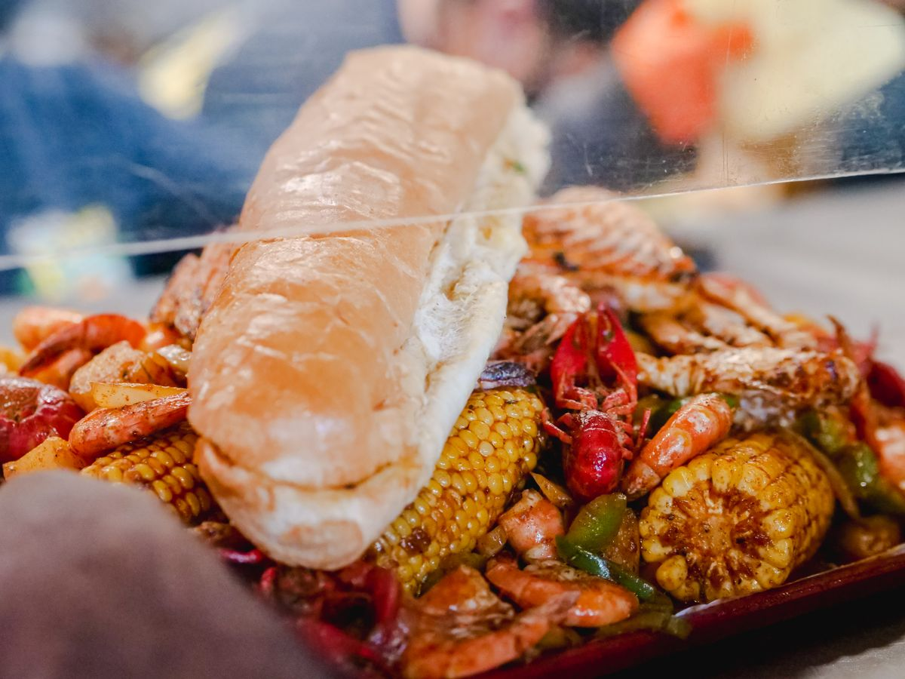
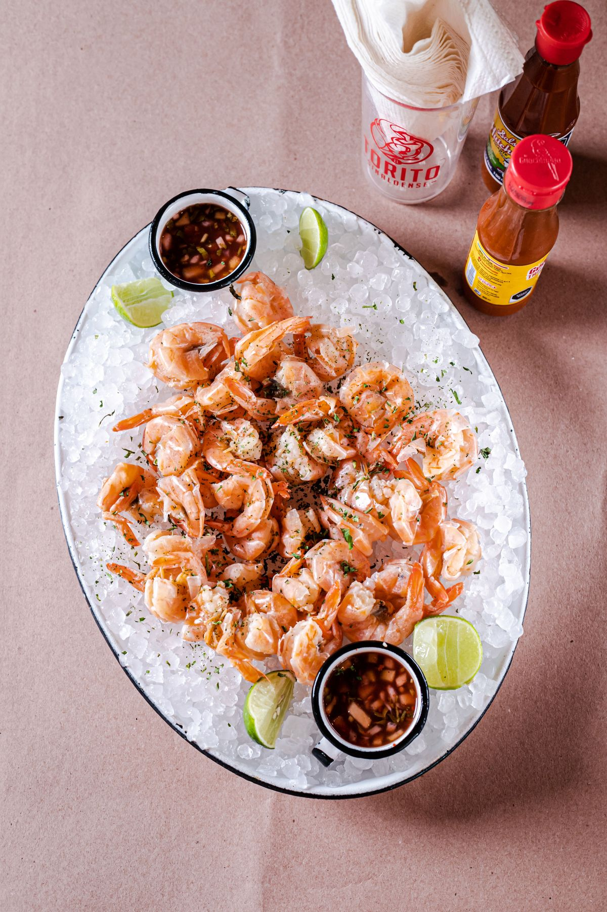
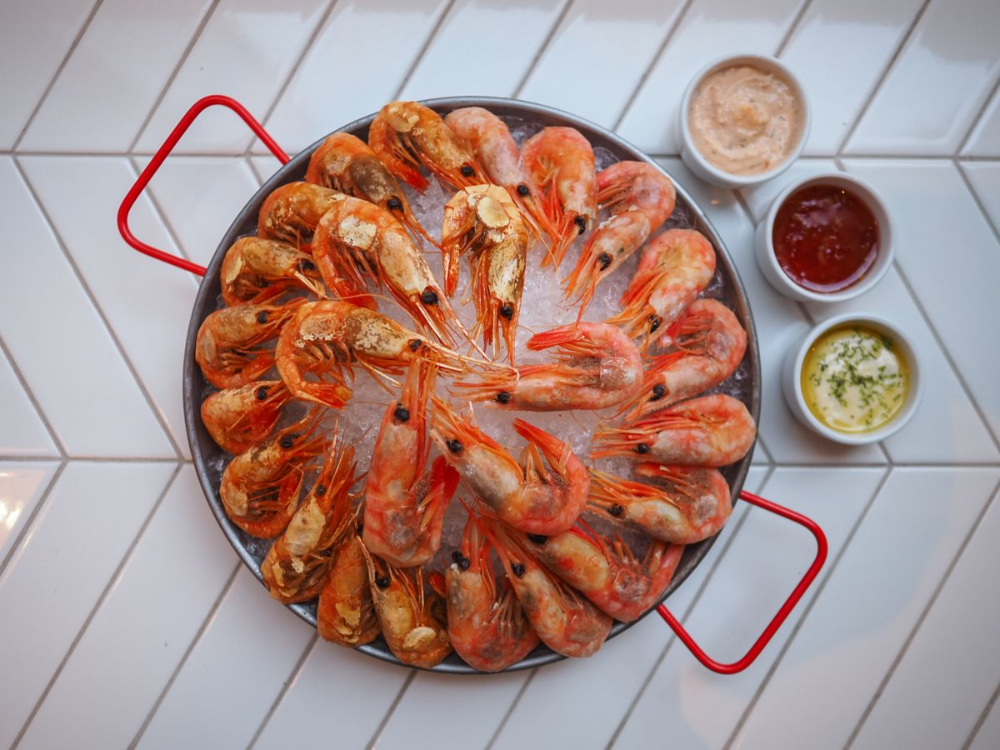

Coconut shrimp and stuffed shrimp
Two of the shrimp plates on the menu.
De Soto's Seafood Kitchen
Gulf Shores, Alabama
De Soto's Seafood Kitchen serves seafood and American cooking in Gulf Shores, Alabama. The menu includes coconut shrimp, stuffed shrimp, fried green tomatoes, snow crab legs, raw oysters, broiled and fried seafood platters, and blackened grouper. Lunch and dinner are served daily, and there is a kids menu.
Two of the shrimp plates on the menu.
Fried green tomatoes to start.
Snow crab legs and raw oysters from the seafood menu.
Broiled and fried seafood platters.
Blackened grouper, among the fish plates.
Lunch and dinner are served daily, and there is a kids menu.



All photos on this page are stock photos, not photos of this business.